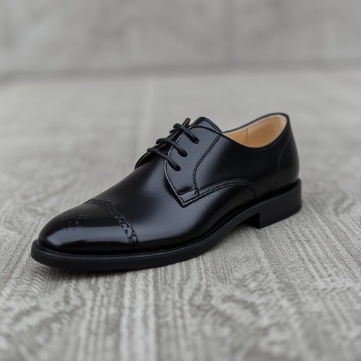
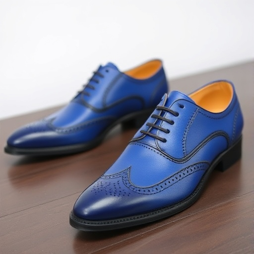

Artículos en stock
VESTIDOS
| Imagen | Nombre | Descripción | Precio |
|---|---|---|---|
| Vestido con estampados moderno | Vestido largo estampado con un diseño étnico y moderno que combina colores vivos y patrones únicos. Su corte elegante incluye una abertura lateral que añade un toque de sofisticación y comodidad. Perfecto para eventos especiales o cenas veraniegas, este vestido resalta la figura con estilo y originalidad. ¡Ideal para lucir radiante y única! | 29,99€ | |
| Vestido con estampado de flores | Vestido midi de estilo bohemio con un estampado floral vibrante y detalles étnicos. Confeccionado en un tejido ligero y suave, presenta mangas 3/4 y un cinturón ajustable que realza la figura. Ideal para eventos primaverales o reuniones elegantes, este diseño combina comodidad y sofisticación en una pieza única. ¡Perfecto para destacar con estilo! | 29,99€ | |
| Vestido amarillo largo clásico | Vestido amarillo de corte fluido con detalles bordados que le aportan un toque delicado y elegante. Diseñado con mangas acampanadas y un escote en V sutil, este modelo es ideal para lucir fresca y radiante en días soleados. Perfecto para ocasiones casuales o eventos primaverales. ¡Dale color a tu guardarropa con esta pieza única! | 29,99€ | |
| Vestido rojo largo clásico | Vestido largo en un vibrante tono rojo con un diseño de sirena que realza la figura. Presenta un escote en forma de corazón y mangas cortas, ideal para eventos elegantes o noches especiales. Su caída fluida y detalles brillantes añaden un toque de sofisticación y glamour. ¡Sé el centro de todas las miradas con este espectacular diseño! | 29,99€ |
SANDALIAS
| Imagen | Nombre | Descripción | Precio |
|---|---|---|---|

|
Sandalia Arqueos | Sandalia de verano en tono camel con plataforma de yute, diseñada para ofrecer estilo y comodidad. Cuenta con tiras cruzadas que aseguran el pie y un diseño fresco, perfecto para los días soleados. Ideal para complementar outfits casuales o bohemios en primavera y verano. ¡Una opción versátil y elegante para cualquier ocasión! | 34,99€ |
| Sandalia Oasis | Sandalias de verano color naranja cálido, con delicados detalles troquelados en el empeine que aportan un toque artesanal y sofisticado. Incluyen cierre ajustable en el tobillo para mayor soporte y comodidad. Perfectas para un look fresco y elegante junto a la piscina o en paseos veraniegos. ¡Ideales para destacar con estilo en días soleados! | 34,99€ | |
| Sandalia Zafiro | Sandalia de diseño moderno en color naranja, con tiras entrelazadas en la parte frontal que aportan un toque elegante y fresco. Cuenta con un cierre ajustable al tobillo para mayor soporte y comodidad, ideal para el verano. Perfecta para complementar tus outfits casuales o sofisticados en días soleados. ¡Estilo y confort en cada paso! | 34,99€ | |
| Sandalia Esmeralda | Elegantes sandalias planas con diseño único en tonos verdes y detalles dorados, perfectas para un look fresco y veraniego. Con tiras ajustables y textura delicada, brindan comodidad y estilo a tus paseos junto a la piscina o días casuales. ¡Un complemento ideal para cualquier outfit primaveral o veraniego! | 34,99€ |
TRAJES
| Imagen | Nombre | Descripción | Precio |
|---|---|---|---|

|
Traje negro | Traje elegante negro con corte clásico que resalta sofisticación y estilo. Perfecto para ocasiones formales y eventos especiales, combina a la perfección con camisas y accesorios refinados. | 49,99€ |
| Traje blanco | Impecable traje blanco de tres piezas, diseñado para destacar en eventos especiales. Con detalles elegantes y un acabado moderno, es ideal para ceremonias y ocasiones únicas. | 49,99€ | |
| Traje azul | Elegante traje azul cobalto con solapas satinadas, perfecto para eventos formales. Su diseño moderno y sofisticado realza el estilo y distinción de quien lo lleva. | 49,99€ | |
| Traje marrón | Traje marrón con estampado a cuadros, diseñado con detalles refinados y un toque clásico. Incluye un chaleco negro que aporta contraste y elegancia, ideal para destacar en eventos especiales. | 49,99€ |
ZAPATOS
| Imagen | Nombre | Descripción | Precio |
|---|---|---|---|
| Zapato puntera marrón | Zapato Oxford en piel marrón con detalles brogue, ideal para un look clásico y refinado. Perfecto para ocasiones formales o para añadir un toque de elegancia a tu día a día. | 49,99€ | |

|
Zapato negro con puntera marrón | Zapato Derby bicolor con elegante diseño en negro y marrón, perfecto para destacar con un look moderno y sofisticado en eventos especiales o reuniones formales. | 49,99€ |
|  | Zapato negro | Zapato Oxford clásico en negro brillante, ideal para ocasiones formales y eventos especiales. Combina sofisticación y estilo atemporal para un look impecable. | 49,99€ |
|  | Zapato azul | Zapatos Derby en vibrante azul con detalles perforados de estilo brogue, combinando modernidad y elegancia. Perfectos para destacar en eventos formales con un toque de personalidad. | 49,99€ |
| Zapato marrón | Zapato Oxford de cuero marrón con detalles brogue, perfecto para un look clásico y sofisticado. Ideal para eventos formales o para añadir un toque elegante a cualquier atuendo. | 49,99€ |